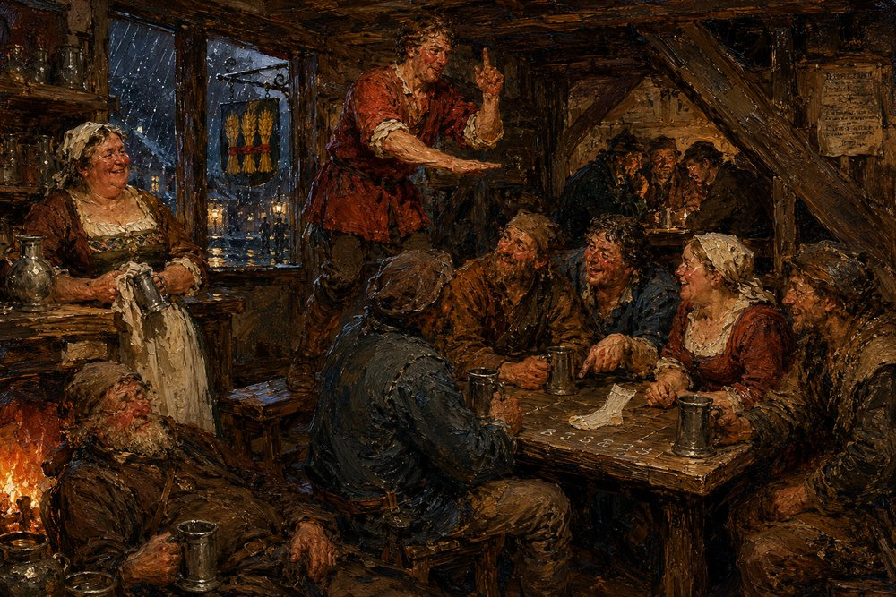

Record 7 of 15
What the taverns called it
In the Three Sheaves on a winter night Waldrada wipes a mug behind the bar while the room gives the black salt its names: a barge-hand's Night-Seed, a carter's Widow's Ashes and a journeyman cooper standing on a bench's splinter of Solan's fire, with a carter's wife leaning in, a drover from the north naming the stranger the Moon-Man, and an old sot dozing by the fire.
A crowded low-beamed taproom lit by firelight and candles, a stout woman in a white apron laughing behind the bar at the left, a ruddy man in a red shirt standing over a table with one hand raised, a ring of men and women in brown leaning in around the table over pewter mugs and a sheet of paper, an old man bent by the fire and a rain-streaked window with a sign.